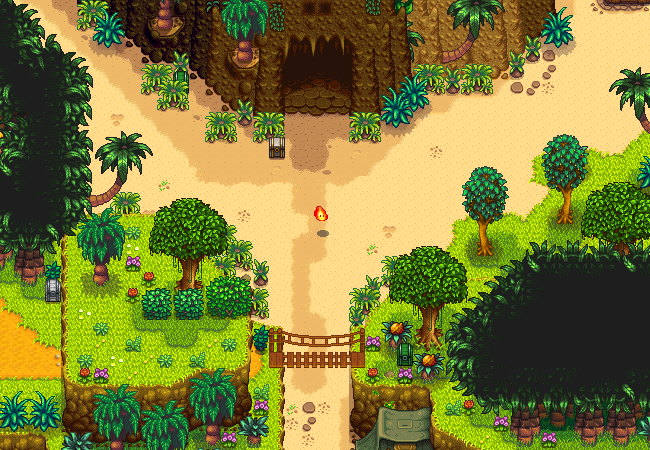
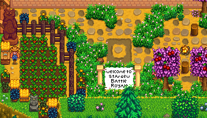
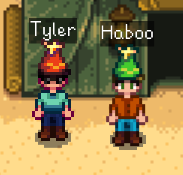

Info
Battle Royalley: Year 2 is an update to the original Battle Royalley mod for Stardew Valley. With this update, we bring new features, cool changes, and bug fixes. The inspiration comes from Ilyaki's original Battle Royalley mod, of which the code is extended from.
Downloads
Credits
Ilyaki github
Big thanks to Ilyaki for creating the original mod. For without it, this project would not exist.
Underscore76 github youtube
Thanks to Underscore for updating the original mod to the latest version of Stardew Valley, SMAPI, and Harmony. This undoubtedly saved me hours of work, as I am far less experienced with C# and the Stardew codebase as a whole.
TheHaboo twitch youtube
Thanks to Haboo for putting in almost as many hours as I have in providing feedback, answering my Stardew questions, testing dev builds, and playing Bloons. Also for making me stop adding features and to finally release the mod.
Haboo also built the entirety of the new lobby and did all of the respriting work required.
Stardew Valley Discord join
Special shoutout to the #making-mods channel of the Stardew Valley Discord server.
Everyone in there has great knowledge of things that break in mysterious ways for mysterious reasons.
Changelog
New Features
Ginger Island
Ginger Island has been added as a fully playable map, with all of the new features and changes made to the original Stardew Valley map.
Leaderboard
The leaderboard is used to keep track of each player's statistics. It can be opened with the TAB key.
Each player has their kills, deaths, and wins tallied on the leaderboard. Each one of these statistics is sortable by clicking on the column header.
Even upon leaving and rejoining, player statistics are retained until the host exits the game.
New Lobby
Marnie's Ranch just got a huge upgrade! And by Marnie's Ranch, I mean the Quarry. And by upgrade, I mean completely built from scratch.
The new lobby is better suited for killing time than being penned up with the cows ever was. Thanks to Haboo, players are able to better spend their downtime by practicing their Junimo Kart or even JOTPK.
Victory Royale Effects
Upon round victory, the winner will be prominantly displayed on the screen of every player. At this time, the player is free to emote to their heart's content, for all to see.
Alongside the display, a sound effect is played to further cement the victor's domination.
Equipment Chests
Equipment chests are random drops left by the characters of Stardew Valley and Ginger Island. Each equipment chest contains two items.
The spawn times of these equipment chests are fixed. There are four spawn times: 25 seconds, 50 seconds, 70 seconds, and 90 seconds into the round.
Click below for the loot table. Chests do not have a grade, but a random grade is chosen for each item in the chest.
Equipment Chest Loot Table
| Item Grade | Spawn Chance | Possible Items |
|---|---|---|
| A Tier | 20% | Dragonscale Boots, Ring of Yoba, Phoenix Ring, Crabshell Ring, Protection Ring |
| B Tier | 80% | Combat Boots, Thorns Ring, Emerald Ring, Ruby Ring, Amethyst Ring |
In-game Commands
The in-game commands are an excellent addition for the de-complication of playing. Having these commands in-game, rather than in the SMAPI console, ensures that players are able to quickly and easily perform the actions that they want.
Below is a list of the new commands.
| Command | Description |
|---|---|
| /kill | Kills yourself. |
| /spectate | Places yourself into spectate mode. You will remain in spectate mode until you use /play. |
| /play | Removes yourself from spectator mode. |
| /name [name] | Rename yourself. |
| /character | Re-opens the character customization menu. |
| HOST ONLY /start | Starts the game. |
| HOST ONLY /lobby | Returns the game to the lobby. |
| HOST ONLY /specialround | Forces the next round to be a special round. |
Player Nametags
Sometimes you want to know who's who. To solve that problem, we've added nametags above all players.
These nametags should follow players behind whatever they can already hide behind, so no worries: you can still hide behind Pierre's and sneakily kill someone as they're coming down.
Visibility of nametags can be toggled (client-side) with the F1 key.

Death Animations
When a player reaches zero health, they feel the need to take a nap. Right where they're standing...
Spectate Follow Mode
For better game watchability, spectator mode has been enhanced to include a follow mode.
With spectate follow mode, spectators have the ability to rotate through the alive players, and automatically follow them wherever they go. While following a player, that player's toolbar will be overlayed on the screen.
Standard spectate mode still exists, and can be accessed by simply using any of the movement keys when following a player.
Special Rounds
Special rounds are like standard rounds but each with a slight twist. These types of rounds take place every three rounds.
Special Round: Slugfest
In Slugfest, all of the players are placed into a small arena in town square. Everyone only receives the default axe, and invulnerability frames are removed.

Special Round: Poor Harvest
In Poor Harvest, the farmers of Stardew Valley were unable to harvest enough food for the season. None of the chests will spawn with any food.
Special Round: Bombs Only
In Bombs Only, no chests will spawn but each player starts with 50 bombs.
Special Round: Teams
In Teams, all of the alive players will be split into three teams equally. Team colors (red, green, and blue) are denoted by party hats.
Special Round: Monsters
In Monsters, various monsters have escaped from the mines. The round will continue at night, but with monsters spawning around players occasionally. Click below to see the spawn table.
Monster Spawn Table
| Monster | Spawn Chance |
|---|---|
| Frost Jelly | 18% |
| Lava Bat | 18% |
| Shadow Shaman | 13% |
| Metal Head | 13% |
| Lava Crab | 13% |
| Sludge | 7.5% |
| Shadow Brute | 7.5% |
| Squid Kid | 5% |
| Serpent | 2.5% |
| Haunted Skull | 2.5% |
Special Round: Slingshots Only
In Slingshots Only, no chests will spawn but each player will start with a slingshot, 100 wood, 50 stone, and 20 copper. Players must choose which ammo type to use to take down their opponents.
Special Round: Travelling Cart
In Travelling Cart, no chests will spawn and no equipment chests will spawn. Players will start with a random melee weapon, random food, random ring, and a random pair of boots. Click below to see the spawn table.
Travelling Cart Spawn Table
| Item Type | Possible Items |
|---|---|
| Melee Weapon | Rusty Sword, Silver Saber, Forest Sword, Insect Head, Bone Sword, Claymore, Templar's Blade, Dark Sword, Ossified Blade, The Slammer, Iron Dirk, Wind Spire, Burglar's Shank, Crystal Dagger, Shadow Dagger, Broken Trident, Wicked Kris, Galaxy Dagger, Dwarf Dagger, Femur, Wood Club, Wood Mallet, Lead Rod, Kudgel |
| Food | Fried Egg, Salad, Baked Fish, Vegetable Medley, Fried Calamari, Strange Bun, Lucky Lunch, Pizza, Fish Taco, Spaghetti, Hashbrowns, Crispy Bass, Chocolate Cake, Pink Cake, Cookie, Fried Eel, Eggplant Parmesan, Blueberry Tart, Pumpkin Soup, Cranberry Sauce, Error Item, Crab Cakes, Mango Sticky Rice, Escargot, Blackberry Cobbler, Artichoke Dip, Farmer's Lunch, Stuffing |
| Rings | Ring of Yoba, Crabshell Ring, Protection Ring, Phoenix Ring, Amethyst Ring, Emerald Ring, Ruby Ring, Thorns Ring |
| Boots | Sneakers, Rubber Boots, Leather Boots, Work Boots, Combat Boots, Tundra Boots, Thermal Boots, Dark Boots, Firewalker Boots, Genie Shoes, Space Boots, Cowboy Boots, Emily's Magic Boots, Leprechaun Shoes, Cinderclown Shoes, Mermaid Boots, Dragonscale Boots, Crystal Shoes |
Storm Endings
You may or may not have realized it, but in the original Battle Royalley, there were only four different ending locations for the storm. Having only four different endings is something that you can get used to pretty fast.
We've added 13 new ending locations, bringing the total number of possible endings to 17. Click below if you would like to see where all of the endings are.
All Storm Ending Locations
- Stardew Valley: South of Marnie's
- Stardew Valley: Robin's House
- Stardew Valley: Mine
- Stardew Valley: Beach
- Stardew Valley: Railroad
- Stardew Valley: Marnie's Ranch
- Stardew Valley: Community Center
- Stardew Valley: Desert
- Stardew Valley: Town Square
- Stardew Valley: Secret Woods
- Stardew Valley: Mutant Bug Lair
- Ginger Island: Northern Island Digsite
- Ginger Island: Southeastern Island Star
- Ginger Island: Resort
- Ginger Island: Western Island Tiger Slimes
- Ginger Island: Western Island Farm
- Ginger Island: Volcano
Changes
Chest Rebalancing
With the help of Haboo, chests (weapons, food, and their quantities) have been rebalanced for a better and more fair experience.
In addition to the balance changes, the color of the chests has changed as well to reflect each chest's grade. Click the dropdown below to view the loot tables and percentages for each chest grade.
Each chest will spawn with a primary item (chest grade dependent) and a secondary item (chest grade independent).
View Loot Tables
Primary Item
| Grade | Spawn Chance | Loot Pool |
|---|---|---|
| Legendary | 10% | Dark Sword, Yeti Tooth, Galaxy Dagger, Kudgel, Slingshot (copper ore) |
| Rare | 50% | Bone Sword, Templar's Blade, Wicked Kris, Lead Rod, Slingshot (stone) |
| Common | 40% | Holy Blade, Rapier, Broken Trident, Slingshot (wood) |
Secondary Item
| Grade | Spawn Chance | Loot Pool |
|---|---|---|
| Greater Food (1 quantity) | 25% | Pink Cake, Rhubarb Pie, Fiddlehead Risotto |
| Lesser Food (3 quantity) | 40% | Bread, Baked Fish, Algae Soup |
| Food Buffs (1 quantity) | 20% | Triple Shot Espresso, Roots Platter, Eggplant Parmesan |
| Cherry Bombs (3 quantity) | 15% | Cherry Bombs |
Inventory Size
Player inventory size has been reduced from the original 36 slots to a total of 12 slots. That's one full hotbar of items, so you have to be more careful deciding which items you keep, and which you discard.
Town Shortcuts
The town shortcuts from the Community Upgrades have all been unlocked. We hope that these paths around Pelican Town will create a new and interesting play dynamic.
Time & Season
With the start of each round, the time and season of the map will be randomized. All of the seasons are possible, and the times will either be: early morning, mid-afternoon, dusk, or midnight.
We found that the random times and seasons add a little bit of extra variety to each round.
Spectate for All
In the prior iteration of Battle Royalley, only the host was able to spectate rounds. That limitation has been removed, and now all players are free to spectate.
See the In-game Commands for information on how to enter spectator mode.
Damage Source Tracking
When a player dies (whether it's via monster, storm, or other reasons), the reason for their death will be accurately tracked and reported via the in-game chatbox.
Bomb Damage Buff
Bomb damage has been buffed to make them viable for use. All bombs (cherry, regular, and mega) will now do 40 - 60 damage.
Remove Club Nerf
In the original iteration of Battle Royalley, the cooldown on the club was increased from the base cooldown by a couple of seconds. This nerf has been removed.
Forced Save
In order to prevent anybody from accidentally ruining their farms, and to provide a better in-game experience for hosts and players, we have removed the ability for players to use their own farms for Battle Royalley.
What this change means is that the title screen now only has two buttons, "Coop" and "Exit". Players will not have the option to host their own farms, nor can they create new farms. Battle Royalley: Year 2 is automatically bundled with the world file, so no additional action (aside from downloading the mod) is needed.
Storm Indoor Locations
Rather than indoor locations being filled with the storm at random periods of time, we have made it so that the storm fills indoor locations as each indoor location is reached.
Every indoor location begins to be filled as soon as the storm reaches any entrance to that location. Each location takes 10 seconds to fill completely.
Storm Color
Yellow storm was bad. Storm is now purple.
Bug Fixes
- Fix food movespeed debuff affecting all players in the location
- Fix sewer entry causing game to crash
- Fix melee special attack being stuck on cooldown after first use
- Fix ring and boots not being removed upon death
- Fix players from gaining permanent invincibility on first successful parry
- Fix Thorns Ring to actually affect attacking players
- Fix Desert bus cutscene from happening for players spawned in the Desert
- Fix when players die in the Desert, stop them from instantly respawning
- Fix holding an item with the mouse in your inventory to bring it to the next round
- Fix original Battle Royalley UI elements not being rendered properly at various zoom and UI scale levels
- Fix spring onions from spawning near Marnie's Ranch